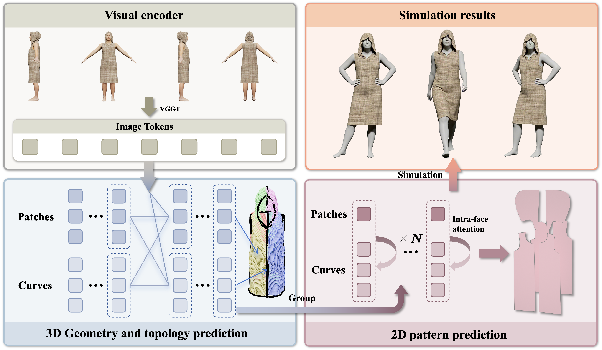
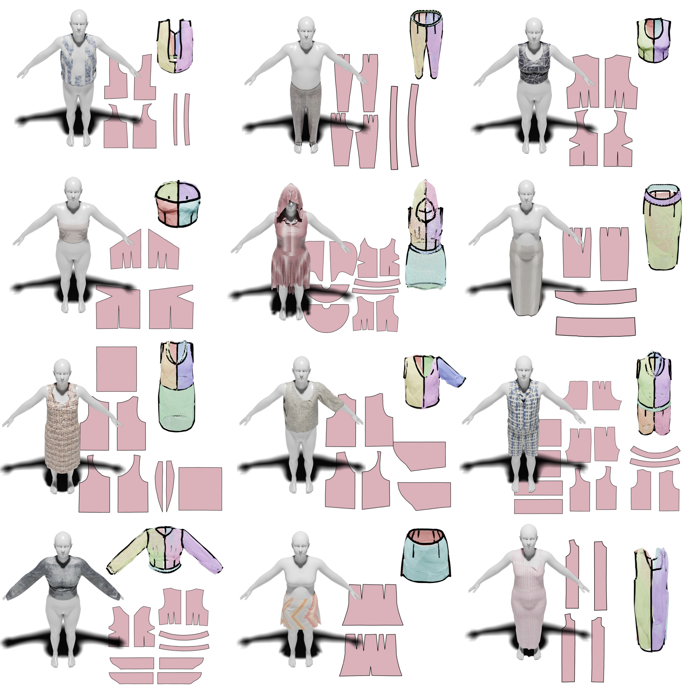
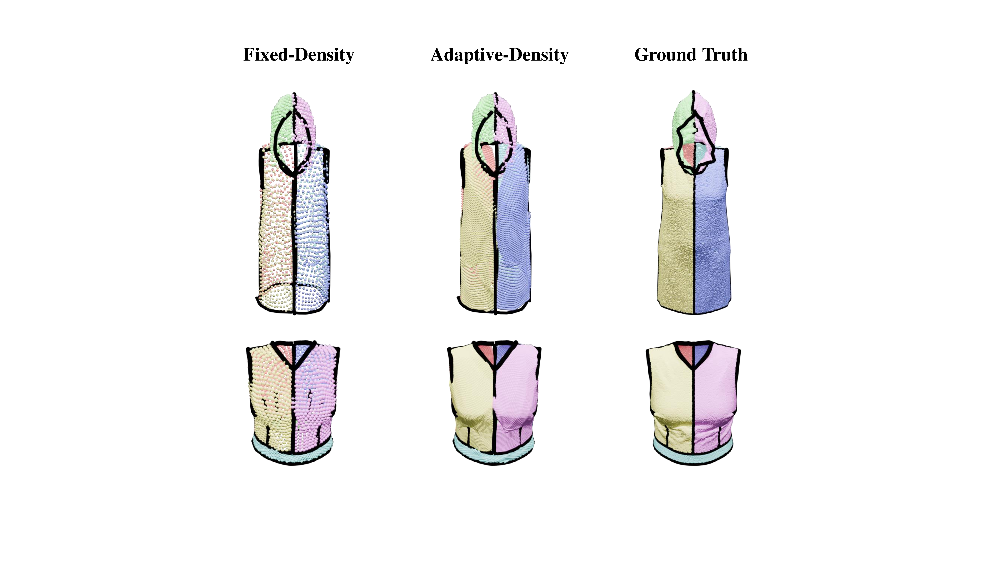
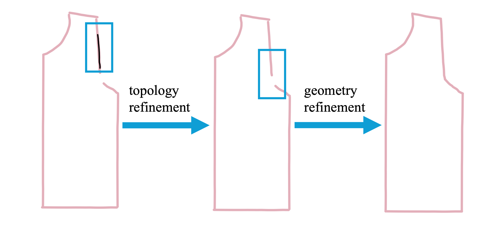
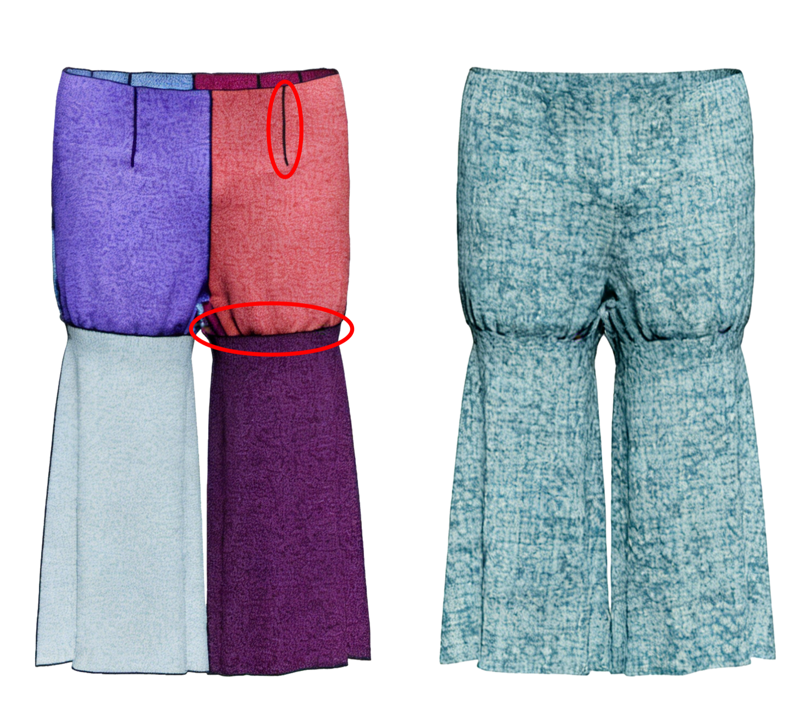

Abstract
High-quality 3D garment reconstruction plays a crucial role in mitigating the sim-to-real gap in applications such as digital avatars, virtual try-on and robotic manipulation. However, existing garment reconstruction methods typically rely on unstructured representations, struggling to provide accurate reconstructions of garment topology and sewing structures. ReWeaver is a framework for topology-accurate 3D garment and sewing pattern reconstruction from sparse multi-view RGB images. Given as few as four input views, it predicts seams and panels as well as their connectivities in both 2D UV space and 3D space. The predicted seams and panels align precisely with the multi-view images, yielding structured 2D-3D garment representations suitable for 3D perception, high-fidelity physical simulation, and robotic manipulation. To enable effective training, we construct the GCD-TS dataset, comprising textured multi-view RGB images, 3D garment geometries, textured human body meshes, and annotated sewing patterns over more than 100,000 synthetic samples.
Structured 2D-3D Reconstruction
ReWeaver jointly reconstructs 3D patches, 3D curves, 2D panel edges, and their explicit patch-curve connectivity in a single unified representation.
Sparse Multi-View Input
The method works from as few as four RGB views by coupling a VGGT-style multi-view encoder with a bi-path transformer for geometry and topology prediction.
Simulation-Ready Assets
The reconstructed panels can be directly used for downstream simulation, while the aligned 3D predictions support perception, analysis, and robotic manipulation.
Method Overview
ReWeaver predicts garment geometry and topology in 3D first, then recovers flattened 2D sewing patterns from the refined structured representation.

Results
ReWeaver improves topology accuracy, geometric fidelity, and seam-panel consistency over previous pattern reconstruction baselines.

| Method | Acc_p | Acc_e | Acc_o | CD_e | IoU |
|---|---|---|---|---|---|
| Sewformer | 0.3761 | 0.4802 | 0.1806 | 0.1161 | 0.5844 |
| ChatGarment | 0.5557 | 0.8012 | 0.4452 | 0.0906 | 0.6533 |
| AIpparel | 0.4561 | 0.6774 | 0.3090 | 0.0648 | 0.7084 |
| ReWeaver | 0.9210 | 0.7175 | 0.6608 | 0.0391 | 0.8221 |



BibTeX
@inproceedings{li2026reweaver,
title={ReWeaver: Towards Simulation-Ready and Topology-Accurate Garment Reconstruction},
author={Li, Ming and Shan, Hui and Zheng, Kai and Shen, Chentao and Liu, Siyu and Fu, Yanwei and Chen, Zhen and Huang, Xiangru},
booktitle={Proceedings of the IEEE/CVF Conference on Computer Vision and Pattern Recognition (CVPR)},
year={2026},
url={https://sii-liming.github.io/ReWeaver/}
}